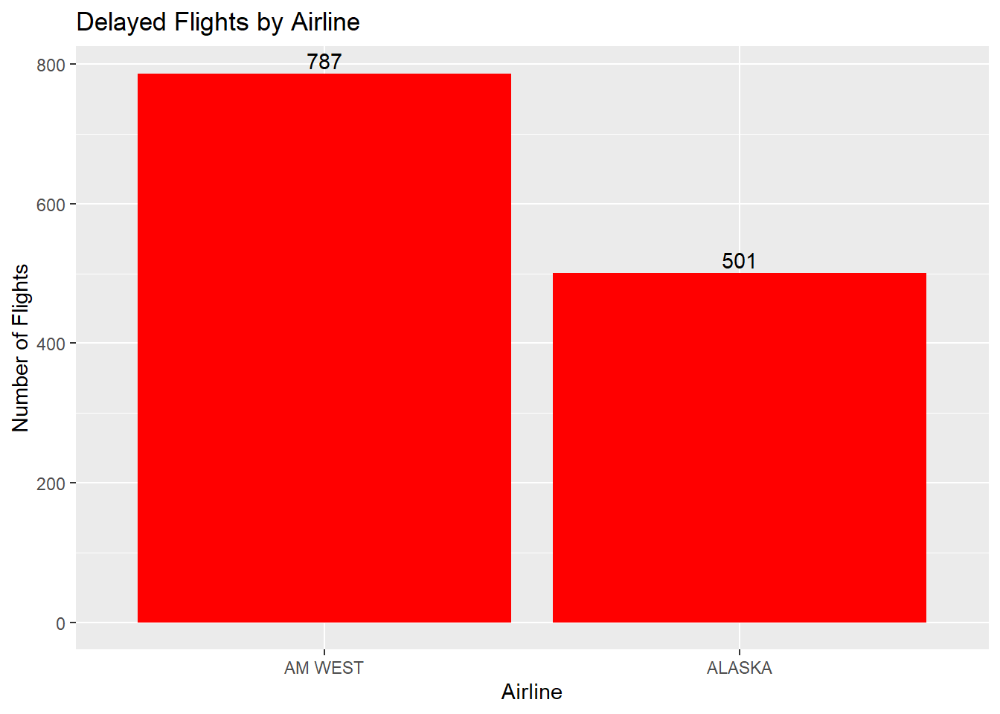
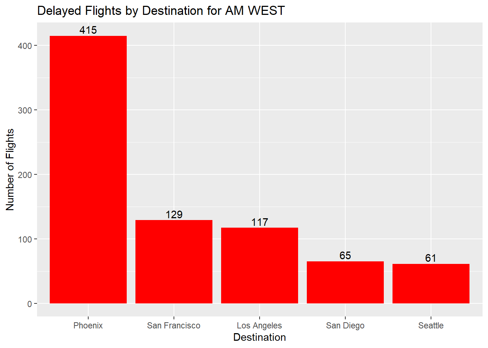
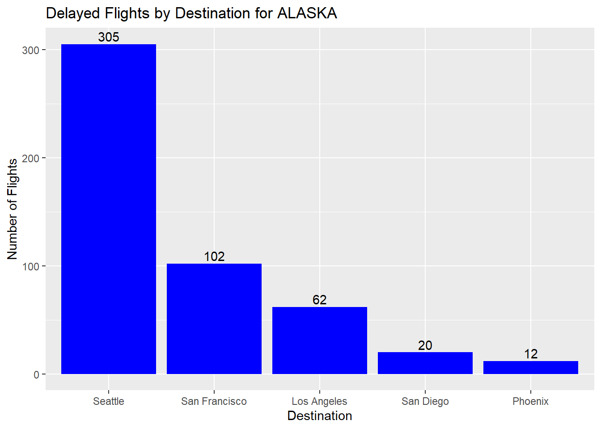

The chart below describes arrival delays for two airlines across five destinations.
Create a .CSV file (or optionally, a MySQL database!) that includes all of the information above. You’re encouraged to use a “wide” structure similar to how the information appears above, so that you can practice tidying and transformations as described below.
I constructed a (CSV) file replicating the provided table. Subsequently, I uploaded the CSV file to GitHub. Finally, I utilized the read.csv function to import the data from the CSV file.
# Read in CSV file my_flights <-read.csv("https://raw.githubusercontent.com/RDLong718/DATA607-Spring24/main/DATA607-Spring2024/Assignments/Assignment%20Tidying%20and%20Transforming%20Data/tidy_flights.csv" )my_flights
X X.1 Los.Angeles Phoenix San.Diego San.Francisco Seattle
1 ALASKA on time 497 221 212 503 1841
2 delayed 62 12 20 102 305
3 NA NA NA NA NA
4 AM WEST on time 694 4840 383 320 201
5 delayed 117 415 65 129 61
Read the information from your .CSV file into R, and use tidyr and dplyr as needed to tidy and transform your data.
The CSV file read in exactly like the table provided. The presence of a null row necessitated its removal, using the na.omit() function.
X X.1 Los.Angeles Phoenix San.Diego San.Francisco Seattle
1 ALASKA on time 497 221 212 503 1841
2 delayed 62 12 20 102 305
4 AM WEST on time 694 4840 383 320 201
5 delayed 117 415 65 129 61
I first renamed the columns to make them more descriptive. I then transformed the data to a long format using the pivot_longer function. Since I intended on filling the Airline column down, I inserted NA for the blank values in preparation for using the fill function.(Doesn’t fill blanks, only NA values)
# Clean up Column names then transform data to long format then insert NA in preparation for using the fill down functionmy_flights <- my_flights |># Rename columnsrename("Airline"="X","Arrival"="X.1","Los Angeles"="Los.Angeles","San Diego"="San.Diego","San Francisco"="San.Francisco" ) |># Pivot data to long formatpivot_longer(cols =-c("Airline", "Arrival"),names_to ="Destination",values_to ="Count" ) |># Insert NA for the blank values in the Airline columnmutate(Airline =ifelse(Airline =="", NA, Airline)) |># Fill in the down directionfill(Airline)my_flights
# A tibble: 20 × 4
Airline Arrival Destination Count
<chr> <chr> <chr> <int>
1 ALASKA on time Los Angeles 497
2 ALASKA on time Phoenix 221
3 ALASKA on time San Diego 212
4 ALASKA on time San Francisco 503
5 ALASKA on time Seattle 1841
6 ALASKA delayed Los Angeles 62
7 ALASKA delayed Phoenix 12
8 ALASKA delayed San Diego 20
9 ALASKA delayed San Francisco 102
10 ALASKA delayed Seattle 305
11 AM WEST on time Los Angeles 694
12 AM WEST on time Phoenix 4840
13 AM WEST on time San Diego 383
14 AM WEST on time San Francisco 320
15 AM WEST on time Seattle 201
16 AM WEST delayed Los Angeles 117
17 AM WEST delayed Phoenix 415
18 AM WEST delayed San Diego 65
19 AM WEST delayed San Francisco 129
20 AM WEST delayed Seattle 61
Perform analysis to compare the arrival delays for the two airlines.
AM WEST had more delays than ALASKA with 787 delayed flights.
By filtering the delayed flights and grouping by Airline I was able to summarize the flights by summing the amount for each Airline. I then built a bar plot to display the results.
# Filter the Delayed flights then group by Airline then summarize the flights by summing the amount of each Airline. Build a bar plot to display the resultsmy_flights |>filter(Arrival =="delayed") |>group_by(Airline) |>summarise(Flights =sum(Count)) |>arrange(desc(Flights)) |>ggplot(aes(x =reorder(Airline, -Flights), y = Flights)) +geom_bar(stat ="identity", fill ="red") +labs(title ="Delayed Flights by Airline", x ="Airline", y ="Number of Flights") +geom_text(aes(label = Flights), vjust =-.3)

Of those delayed flights AM WEST had the most delays in Phoenix, while ALASKA had the most delays in Seattle.
I shifted analysis from Airline-based grouping to destination-based grouping, enabling visualization of delayed flights by their destination. Bar charts were constructed and placed side by side to facilitate comparative analysis.
my_flights |>filter(Arrival =="delayed" , Airline =="AM WEST") |>group_by(Destination) |>summarise(Flights =sum(Count)) |>arrange(desc(Flights)) |>ggplot(aes(x =reorder(Destination, -Flights), y = Flights)) +geom_bar(stat ="identity", fill ="red") +labs(title ="Delayed Flights by Destination for AM WEST", x ="Destination", y ="Number of Flights") +geom_text(aes(label = Flights), vjust =-.3)my_flights |>filter(Arrival =="delayed" , Airline =="ALASKA") |>group_by(Destination) |>summarise(Flights =sum(Count)) |>arrange(desc(Flights)) |>ggplot(aes(x =reorder(Destination, -Flights), y = Flights)) +geom_bar(stat ="identity", fill ="blue") +labs(title ="Delayed Flights by Destination for ALASKA", x ="Destination", y ="Number of Flights") +geom_text(aes(label = Flights), vjust =-.3)


Looking at the descriptive statistics of the delayed flights for both Airlines, ALASKA has a lower average of delayed flights with 100 compared to AM WEST 157 average delayed flights. AM WEST also has a higher deviation of delayed flights, which indicates that the number of the delayed flights are more variable than ALASKA.
To analyze the descriptive statistics of delayed flights for both airlines, a dedicated dataframe was initially constructed, exclusively containing delayed flights. Subsequently, the describeBy function (psych package) used. The first column was not needed so I eliminated it. Additionally, the first column label was changed to enhance clarity. Finally, the resulting data was transformed into a tibble format to promote readability.
# Summary of Descriptive statistics for the delayed flights grouped by Airlinedelayed_flights <- my_flights |>filter(Arrival =="delayed")delayed_flights
# A tibble: 10 × 4
Airline Arrival Destination Count
<chr> <chr> <chr> <int>
1 ALASKA delayed Los Angeles 62
2 ALASKA delayed Phoenix 12
3 ALASKA delayed San Diego 20
4 ALASKA delayed San Francisco 102
5 ALASKA delayed Seattle 305
6 AM WEST delayed Los Angeles 117
7 AM WEST delayed Phoenix 415
8 AM WEST delayed San Diego 65
9 AM WEST delayed San Francisco 129
10 AM WEST delayed Seattle 61
item group1 vars n mean sd median trimmed mad min max range
X11 1 ALASKA 1 5 100.2 120.0175 62 100.2 62.2692 12 305 293
X12 2 AM WEST 1 5 157.4 147.1625 117 157.4 77.0952 61 415 354
skew kurtosis se
X11 0.8482653 -1.203946 53.67346
X12 0.9613965 -1.052983 65.81307
# A tibble: 2 × 14
Airline vars n mean sd median trimmed mad min max range skew
<chr> <dbl> <dbl> <dbl> <dbl> <dbl> <dbl> <dbl> <dbl> <dbl> <dbl> <dbl>
1 ALASKA 1 5 100. 120. 62 100. 62.3 12 305 293 0.848
2 AM WEST 1 5 157. 147. 117 157. 77.1 61 415 354 0.961
# ℹ 2 more variables: kurtosis <dbl>, se <dbl>
Conclusion This assignment provided an opportunity to practice tidying and transforming data using the tidyr and dplyr packages. It also allowed me to explore descriptive statistical summary packages such as psych. The data was transformed from a wide format to a long format, and descriptive statistics were calculated for the delayed flights grouped by Airline. The results were visualized using bar plots to compare the arrival delays for the two airlines and to compare the arrival delays for the two airlines by destination.